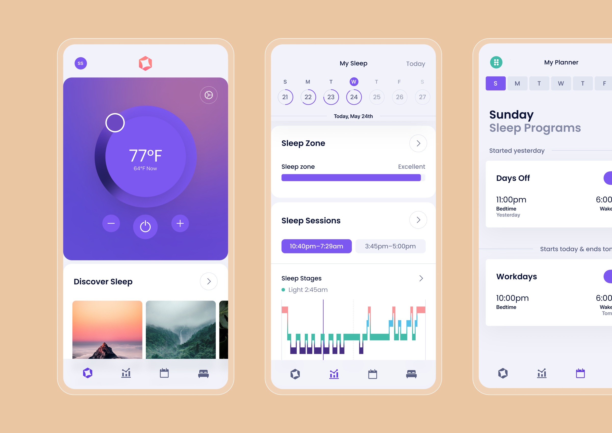
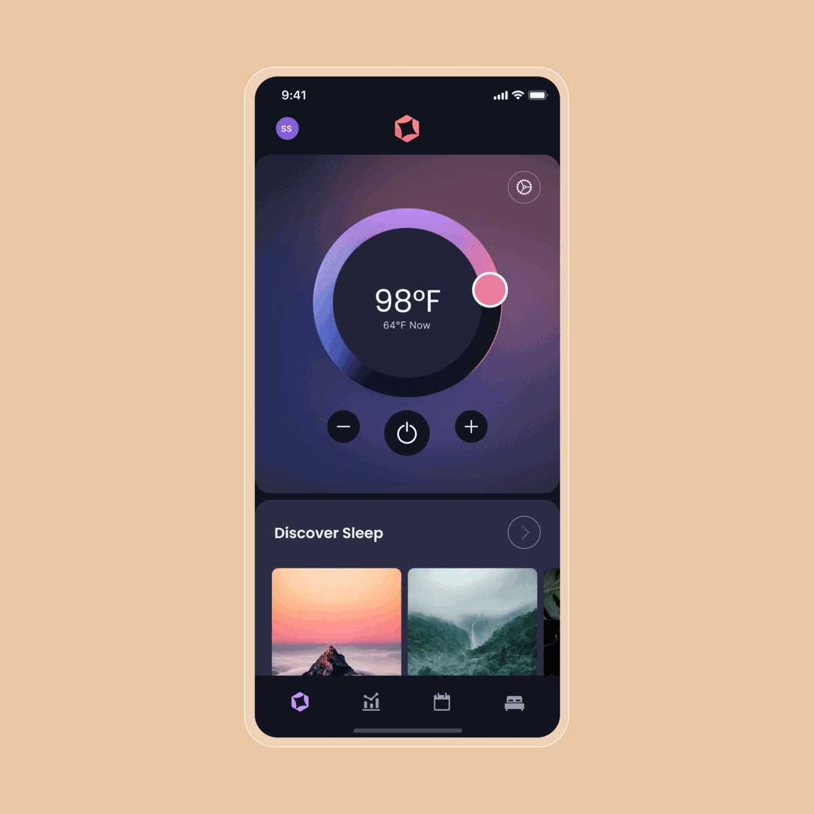
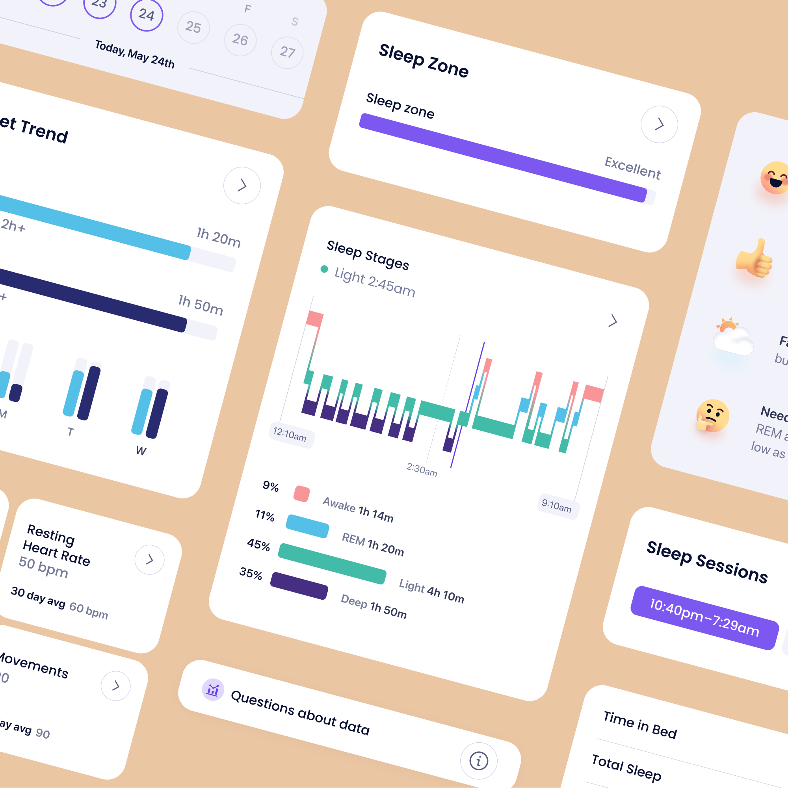
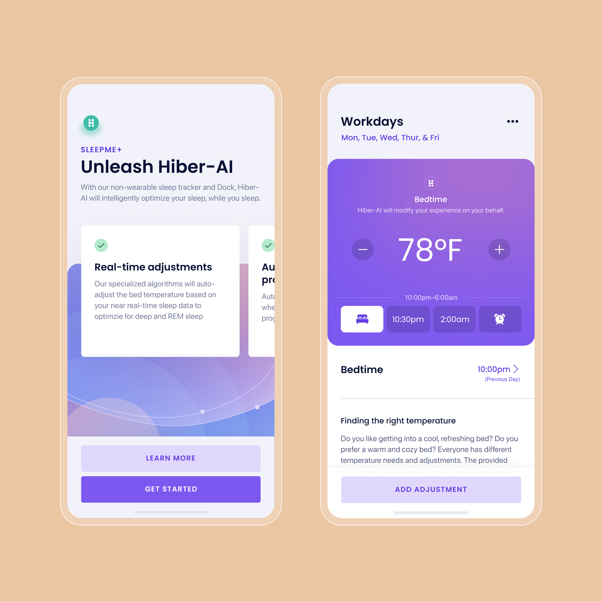
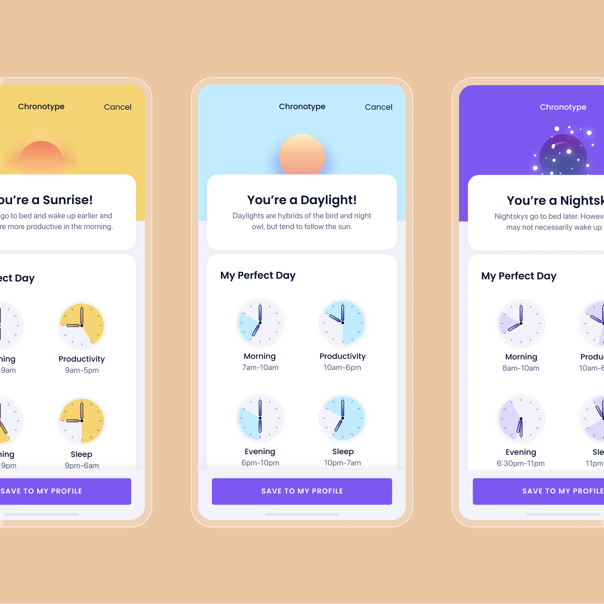

Product Design · Health Tech · 2021 — 2022
Redefining
sleep

Overview
Making sleep a positive part of people's health
Sleepme is on a mission to make sleep easier, more accessible, and a positive part of people's future health. When I joined the team, Sleepme had already developed various IoT-based products for the bedroom and was starting to build a SaaS platform to improve the health and well-being of their consumers.
I led my own design efforts and collaborated closely with the product and development teams throughout the course of each project. Together, we launched the rebranding of the Sleepme website, shaped the visual brand and design system, and designed many of the core features within the mobile app around sleep tracking and Hiber-AI.
Process
Research-led, shipped in small batches
Much of the work we developed was based on new experiences, so our focus was to launch small improvements quickly and iterate on them using the insights we gained from qualitative and quantitative data. The best way to design and build a product people want is by stepping away from the desk and getting out to talk to your customers.
Activities like interviews and surveys helped us surface potential opportunities by better understanding our users' pain points, needs, and desires. After talking to customers, we found three target groups: performance and recovery, sleep-deprived individuals, and wellness seekers. The insights gained by conducting frequent interviews throughout our discovery work shaped our experience to better serve our customers' needs and shine a light on our own biases and assumptions.
We found that many people felt powerless when they didn't get enough sleep, and the more energy they put into trying tended to work against them. Everyone's sleep journey is unique — what works for one may not work for another. By putting the sleeper first, we found that providing quick wins early and offering a supportive experience with ongoing tools and resources could help empower them on their way.
Our bodies are programmed to experience a slight dip in core temperature in the evening — a signal to our brain that it's time for bed. These cooler temperatures are also more conducive to slow-wave sleep and help prevent restlessness. Customers could control their bed temperature using our thermoregulation mattress pad and the mobile app to schedule manual temperature programs that would run through the night.
Next, we launched the sleep tracker to help customers monitor their sleep and make adjustments as they uncovered patterns in their data. The discoveries we made from mobile app analytics and customer interviews showed that not everyone looked at raw data daily, but desired views of trends over time and actionable steps based on their data.
We introduced Hiber-AI, a virtual sleep coach, to take the ambiguity and work off our customers' hands. Setting manual programs can be a heavy cognitive load — too demanding at times when they have to get out of bed or don't get to sleep on time. With Hiber-AI, we can now intelligently reference sleeper data to adjust bed temperatures in real-time without asking people to be on their phones in the middle of the night.




Outcomes
Iterating toward a better night's sleep
We learned a tremendous amount by launching these features in small batches and iterating. The team is excited to use the tools and processes we set up throughout these projects — like Mixpanel for aggregated analytics, in-app feedback, and frequent customer interviews — to discover further opportunities for continued improvements to the experience.
"Design is the application of intention, and you are only as intentional as you are informed." When we conduct research and talk to customers, I'm a huge proponent of sharing this information with the team in an easily accessible location so that it can continue to be helpful for others. If my efforts can help others be better and more efficient at their jobs, then I feel like it's been time well spent.
Much of this case study lays out the broader context of the mobile app experience, but if you'd like to dig deeper into the product and design strategy, I'd be happy to chat.